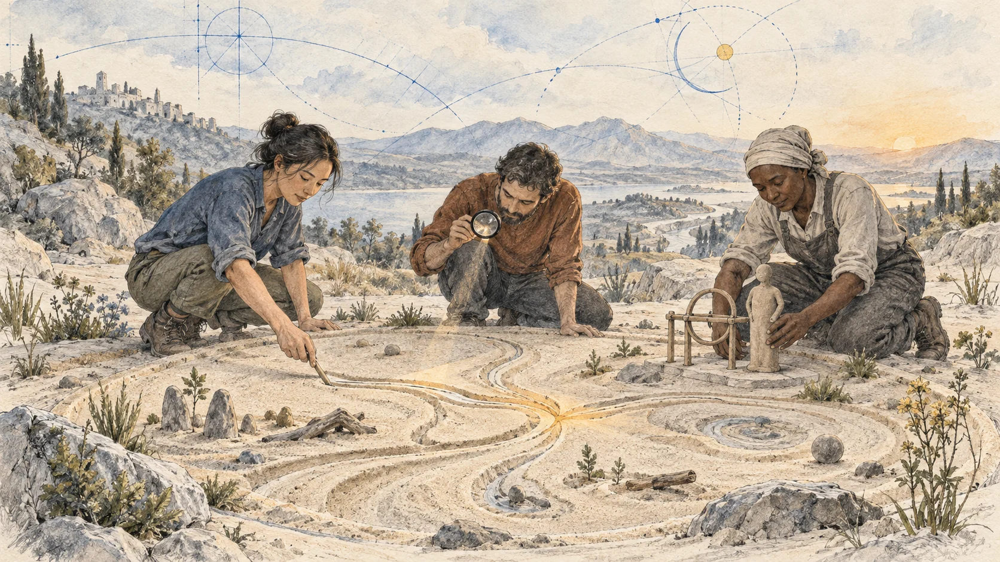
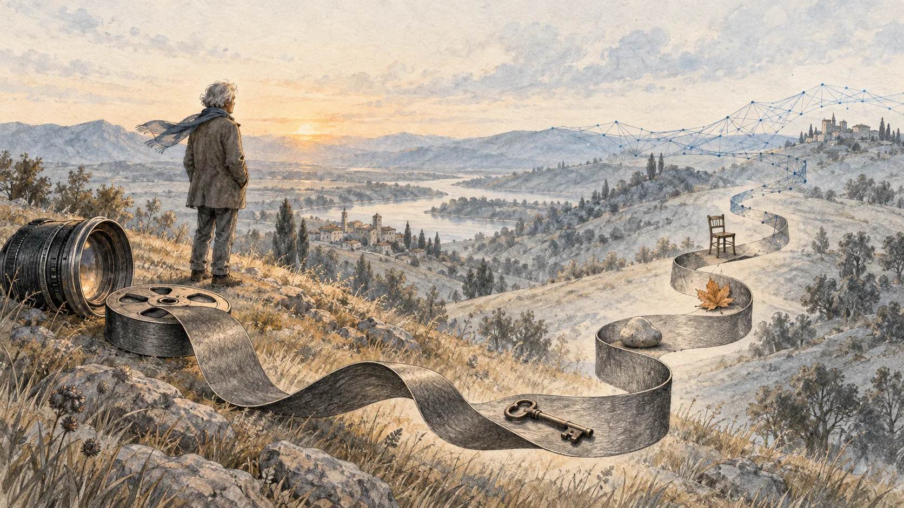

AI Summit PJAIT · 16 września 2026
Edukacja na świat, który dopiero powstaje
Sławomir Idziak
Skład według programu i zapowiedzi
AI z punktu widzenia emeryta

Sławomir Idziak prowadzi od analogowego kina do awatarów i agentów. Za osobistymi anegdotami stoi pytanie o edukację: jak uczyć współpracy z technologią, która zmienia nie tylko narzędzia, lecz także role, pamięć i organizację zespołu.
Najważniejsze wątki
Nowe urządzenie nie wystarczy
Wykład łączy zachwyt nad pomocą AI z obawą o utratę umiejętności i kontroli nad pozostawionymi danymi. Idziak używa humoru, religijnych porównań i dystopijnych obrazów, aby pokazać zakres zmiany; nie wszystkie te przykłady są twierdzeniami dosłownymi.
Jego główny postulat dotyczy kształcenia: przełamywać silosy, rozwijać zespoły, dawać miejsce na eksperyment i różnicować wzorce współpracy z agentami. Uczyć się przez wspólne próby, zamiast przygotowywać wyłącznie do wczorajszego zawodu.
- Nasze cyfrowe ślady mogą funkcjonować poza pierwotnym zamiarem autora.
- Zewnętrzna pamięć i automatyzacja pomagają, lecz zmieniają ćwiczone umiejętności.
- Idziak opisuje AI jako partnera wymagającego nowego przygotowania.
- Zakup technologii bez zmiany organizacji może utrwalić dawne ograniczenia.
- Edukacja potrzebuje współpracy dyscyplin, zespołów i piaskownicy innowacji.
- Różni agenci i mentorzy mają służyć odrębności pomysłów, nie tylko szybszej odpowiedzi.
Jedno życie, kilka epok
Sławomir Idziak nie przedstawia się jako specjalista projektujący AI. Punktem wyjścia jest doświadczenie filmowca i edukatora, który w jednym życiu obserwował przejście od analogu przez cyfrową produkcję do generatywnych narzędzi. Zmiany zawodowe spotykają się tutaj z nadmiarem informacji.
Prelegent kontrastuje dawną ograniczoną dostępność przekazu z dzisiejszą potrzebą bronienia się przed nim. Pokazuje też awatary przygotowane na podstawie jego materiałów. Traktuje je jako znak, że zapis pozostawiony przez człowieka może zacząć funkcjonować niezależnie od jego obecności i pierwotnego zamiaru.
Czytaj fragment skryptu ↗ · W pełnym nagraniu · 01:31:40–01:34:20 ↗
Ślad człowieka staje się materiałem
W spekulacyjnym przykładzie Idziak wyobraża sobie gromadzenie cudzych życiorysów i tworzenie awatarów wykorzystujących ich wiedzę, doświadczenie czy poglądy. Nie opisuje gotowego rynku. Pyta o możliwość zamiany osobowej pamięci w zasób, z którego ktoś inny będzie korzystał po śmierci pierwowzoru.
Jego osobista opowieść o kinie pokazuje inną stronę wpływu informacji. Obejrzenie filmu mogło wzbudzić pragnienie prowadzące później do zawodu i kolejnych spotkań. Takie tło nie jest tu katalogiem osiągnięć, lecz przykładem, że tworzą nas także pojedyncze, silnie przeżyte obrazy, a nie tylko zgromadzona dokumentacja.
Czytaj fragment skryptu ↗ · W pełnym nagraniu · 01:34:20–01:40:30 ↗
Pamięć większa, umiejętność mniejsza
Idziak przywołuje pracę nad opowieścią o człowieku pamiętającym niemal wszystko. Bohater porządkuje wspomnienia przez wyobrażoną drogę i umieszcza na niej wydarzenia. Problemem staje się przełożenie wewnętrznego doświadczenia na obraz, który zobaczy widz; zasób pamięci nie jest jeszcze zrozumiałą formą.
Potem prelegent wraca do codzienności. Dawniej musiał pamiętać wiele numerów i adresów, dziś przechowują je urządzenia. Zyskujemy ogromny zewnętrzny magazyn, a równocześnie możemy rzadziej ćwiczyć własną zdolność. Podobne napięcie widzi w dubbingu: AI pomaga mu wykonać pracę mimo trudności ze słuchem, lecz rodzi pytanie o przyszłą rolę nadzorującego człowieka.
Czytaj fragment skryptu ↗ · W pełnym nagraniu · 01:40:30–01:44:45 ↗
Co oddajemy, kiedy płacimy
Idziak formułuje mocną, krytyczną ocenę pozyskiwania materiałów do modeli. W jego interpretacji użytkownik płaci podwójnie: pieniędzmi za usługę i własnymi śladami, wiedzą oraz twórczością. To stanowisko prelegenta, nie ustalenie dotyczące każdego konkretnego dostawcy czy umowy.
Rozważanie przechodzi w obrazy katastrofy. Powieść Droga interesuje go nie tylko jako opowieść o przetrwaniu, ale też o przekazywaniu wartości między ojcem i synem. Idziak dopisuje własną fantazję o zniszczonym centrum danych i ocalałym urządzeniu: pozostałość technologii mogłaby stać się początkiem nowego mitu.
Czytaj fragment skryptu ↗ · W pełnym nagraniu · 01:44:45–01:49:10 ↗

Partner wymaga innego przygotowania
Religijne i literackie porównania pełnią w wykładzie rolę prowokujących metafor. Dostępna przez całą dobę pomoc przypomina Idziakowi obietnicę opiekuna, ale ta sama technologia może wspierać osoby o sprzecznych zamiarach. Samo zapewnienie, że mamy użyteczne narzędzie, nie rozwiązuje problemu celów jego użycia.
Prelegent sprzeciwia się redukowaniu AI do porównania z siekierą. Woli myśleć o partnerze, którego działanie wymaga nowego sposobu współpracy. Z tego wyprowadza główny postulat: edukacja powinna przygotowywać do zmienionej rzeczywistości, zamiast odtwarzać zawodowy świat, który już odchodzi.
Czytaj fragment skryptu ↗ · W pełnym nagraniu · 01:49:10–01:52:00 ↗
Rozbić silosy, zanim powstanie produkt
Na własnym przykładzie Idziak pokazuje opóźnienie kształcenia: w szkole ćwiczył czarno-białą fotografię, a pierwsza praca wymagała koloru. Jego krytyka dotyczy także przyzwyczajeń produkcyjnych. Zakup nowoczesnego urządzenia nie oznacza automatycznie przeorganizowania pracy, jeśli nadal bronimy dawnych zasad.
Pierwszym rozwiązaniem mają być połączenia między dyscyplinami. Idziak uważa, że artyści i programiści powinni uczyć się współpracy wcześniej. Włączenie psychologii czy filozofii dopiero po powstaniu problemów porównuje do zakładania kagańca gotowemu systemowi; chciałby, aby pytania o człowieka wpływały już na jego projektowanie.
Czytaj fragment skryptu ↗ · W pełnym nagraniu · 01:52:00–01:56:10 ↗
Nie tylko wybitna jednostka
Kolejny postulat dotyczy zespołu. Idziak przeciwstawia mit samotnego geniusza współdziałaniu osób o różnych kompetencjach. Wspomina szkoły filmowe, w których inne wydziały spotykały się głównie przy wykonywaniu zleconych zadań, a rzadziej przy wspólnym rozwijaniu projektu.
Zespołowi potrzebna jest przestrzeń prób. Prelegent proponuje piaskownicę innowacji: uczestnicy rozwiązują rzeczywiste zadania, ale mogą popełniać błędy bez ciężaru ukończonego zawodowego produktu. To odpowiedź na sytuację, w której pracę domową przygotowuje AI, a jej ocenę również wykonuje AI — formalny proces trwa, lecz uczenie może stać się pozorne.
Czytaj fragment skryptu ↗ · W pełnym nagraniu · 01:56:26–02:01:30 ↗
Różni mentorzy, wspólna piaskownica
Idziak pyta, jak uniknąć otrzymywania podobnych rozwiązań od tego samego modelu. Opisuje eksperyment edukacyjny z osobnymi agentami opartymi na wybranych mentorach. Projektowi nadaje żartobliwą nazwę „Stowarzyszenie umarłych filmowców”, przedstawianą jako parafraza filmowego tytułu. Uczestnik wybiera postać, której sposób myślenia ma stanowić określony punkt odniesienia dla porad i rozmowy.
Te profile nie mają tylko odpowiadać pojedynczemu użytkownikowi. W opisywanym pomyśle drugi mechanizm wyszukuje osoby o wspólnych zainteresowaniach lub uzupełniających się umiejętnościach. Ludzie i ich agenci spotykają się przy projekcie, dyskutują, a szerszy model pomaga porządkować powstający materiał.
Prelegent nie przedstawia tego jako najlepszego ani zakończonego modelu edukacji. Podkreśla wartość podejmowania prób. Wniosek jest praktyczny w sensie dydaktycznym: zmiany nie poznamy przez samo powtarzanie ostrzeżeń, jeśli nie stworzymy miejsca, w którym można wspólnie sprawdzać nowe formy pracy.
Czytaj fragment skryptu ↗ · W pełnym nagraniu · 02:01:30–02:04:42 ↗
Ciągły zegar pełnego wideo
Mapa nagrania
To autorskie opracowanie, z parafrazami wypowiedzi. Czas liczymy od początku pełnego nagrania konferencji. Granice są orientacyjne; fragmenty promocyjne i organizacyjne pominięto.
01:31:40Jedno życie, kilka epok
Analog, cyfry i AI tworzą tło do pytania o przyspieszenie oraz niezależne życie naszych danych.
Czytaj fragment skryptu ↗ · W pełnym nagraniu · 01:31:40–01:34:20 ↗
01:34:20Ślad człowieka staje się materiałem
Hipoteza awatarów zestawia przechowywanie wiedzy z osobistym znaczeniem przeżytych obrazów.
Czytaj fragment skryptu ↗ · W pełnym nagraniu · 01:34:20–01:40:30 ↗
01:40:30Pamięć większa, umiejętność mniejsza
Niezwykła pamięć i doświadczenie dubbingu pokazują zysk oraz utratę związane z pomocą urządzeń.
Czytaj fragment skryptu ↗ · W pełnym nagraniu · 01:40:30–01:44:45 ↗
01:44:45Co oddajemy, kiedy płacimy
Krytyka pozyskiwania danych prowadzi do dystopijnej opowieści o technologii i wartościach.
Czytaj fragment skryptu ↗ · W pełnym nagraniu · 01:44:45–01:49:10 ↗
01:49:10Partner wymaga innego przygotowania
Metafora partnera wyjaśnia, dlaczego Idziak domaga się zmiany przygotowania do współpracy z AI.
Czytaj fragment skryptu ↗ · W pełnym nagraniu · 01:49:10–01:52:00 ↗
01:52:00Rozbić silosy, zanim powstanie produkt
Prelegent chce łączyć dyscypliny i zmieniać organizację pracy, a nie jedynie kupować nowe urządzenia.
Czytaj fragment skryptu ↗ · W pełnym nagraniu · 01:52:00–01:56:10 ↗
01:56:26Nie tylko wybitna jednostka
Zespół i bezpieczne eksperymentowanie mają zastąpić pozorną naukę opartą na automatycznym zadaniu i ocenie.
Czytaj fragment skryptu ↗ · W pełnym nagraniu · 01:56:26–02:01:30 ↗
02:01:30Różni mentorzy, wspólna piaskownica
Agenci reprezentujący różne wzorce mają pomagać w różnicowaniu pomysłów oraz dobieraniu współpracowników.
Czytaj fragment skryptu ↗ · W pełnym nagraniu · 02:01:30–02:04:42 ↗
Źródło i sposób opracowania
Autorska parafraza prelekcji z polskich automatycznych napisów streamu PJAIT. Spekulacje, humor i oceny przypisano Idziakowi. Nie uzupełniono niepewnych nazw filmu ani postaci z anegdoty pamięciowej. Pominięto autopromocję publikacji i końcowe zaproszenie na hackathon; opis modelu edukacyjnego zachowano jako merytoryczny przykład.
Stanowiska, przewidywania i przykłady należą do rozmówców. Pełne nagranie PJAIT · Oficjalny program · Plan: 10:50–11:15. Godzina programu i zegar wideo są różnymi osiami czasu.